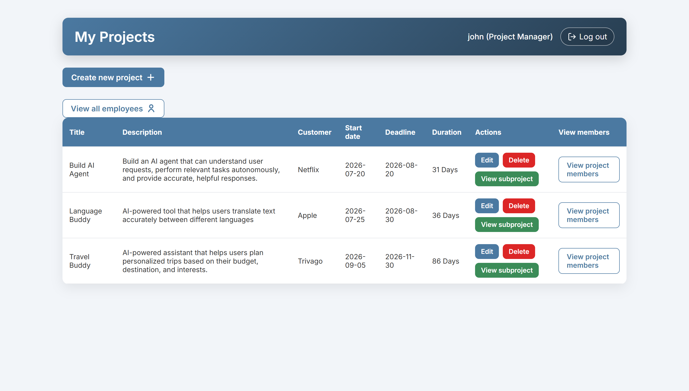
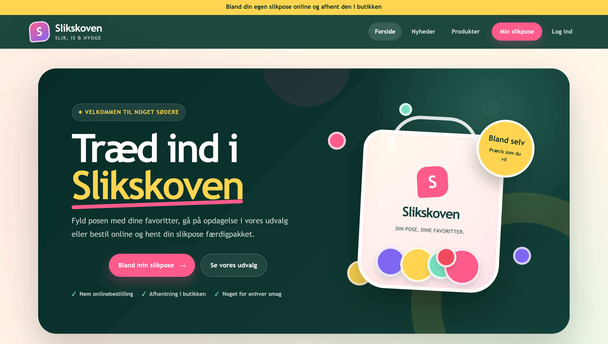

Software Developer · Full-stack · Problem solver
Digitale løsninger, praktisk.
Navnet er Al-Jamour... Alan Al-Jamour, en nysgerrig softwareudvikler med fokus på Java, Spring Boot, REST APIs, databaser, Docker og moderne webapplikationer med voksende interesse for AI Agenter og Automatisering samt IT-sikkerhed. Jeg går et spadestik dybere for at forstå, hvordan teknologien hænger sammen.
Om mig
Hvordan jeg arbejder
Jeg valgte softwareudvikling, fordi det tvinger mig til at tænke struktureret, kreativt og løsningsorienteret samt skabe værdi for mennesker. Jeg bliver motiveret af problemer, hvor man ikke bare kan kopiere en løsning, men skal forstå systemet bag.
Mine projekter har især givet mig erfaring med backend, API-design, relationelle databaser, frontend-integration, Docker, Git, Linux, virtuelle maskiner & CI/CD. Jeg har blandt andet deployet en Docker-baseret Spring Boot-applikation med MySQL på en Ubuntu-server ved hjælp af SSH, Nginx, eget domæne & HTTPS.
Jeg prøver at skrive kode, der ikke kun virker, men også kan læses, udvides og forklares.
Forstå først
Jeg prøver at forstå problemet, domænet og brugeren før jeg skriver løsningen.
Byg simpelt
Jeg starter med det vigtigste, får det til at virke, og forbedrer derefter.
Lær konstant
Jeg bruger fejl, debugging og feedback som en aktiv del af læringen.
Kompetencer
Teknologier & metoder
Teknologier jeg har arbejdet med gennem uddannelse, projekter & deployment af egne applikationer.
01
Programming
02
Backend & Web
03
Database & Data
04
DevOps & Infrastructure
05
Udviklingsmetoder
Projekter
Udvalgte projekter
Et udvalg af projekter, hvor jeg har arbejdet med softwareudvikling, databaser, API-design og deployment.
01
Live

Åbn projekt
Java
Spring Boot
Thymeleaf
MySQL
Project Calculation Tool
Projektstyringssystem med rollebaseret adgang til projekter, delprojekter, medarbejdere og opgaver.
Rollebaseret login
Task management
MySQL deployment
02
Kommer snart

Java
JavaScript
Spring Boot
MySQL
Slik Skoven & Is
Webapplikation til en slikbutik med produktoversigt, nyheder, administration og bestilling af bland-selv slik.
CRUD-administration
REST API
Docker Compose
Erfaring
Relevant erhvervserfaring
Mine tidligere jobs har givet mig erfaring med kundekontakt, ansvar, selvstændigt arbejde og samarbejde i travle miljøer.
Jul. 2022
—
Jan. 2026
Børnehost
Tivoli Hotel & Congress Center · Vesterbro
Gæsteservice og afvikling af aktiviteter i et internationalt hotelmiljø med fokus på tryghed, overblik og gode oplevelser.
Sommer
2025
Blomster- & frugtbud
Delivr · Transport & logistik
Planlagde og gennemførte leveringer af blomster og frugt fra virksomheder til kunder. Håndterede løbende ændringer, forsinkelser, adressefejl og andre problematikker gennem koordinering med både afsender og modtager.
Dec. 2024
—
Okt. 2025
Catering Barista
Marias Kaffebar · Nørrebro
Tilberedning og servering af drikkevarer, kundebetjening og håndtering af bestillinger i et travlt cafémiljø.
Aug. 2024
—
Jan. 2025
Salgsmedarbejder
Bakery by Hermann · Jægersborg
Salg, kundeservice og daglig drift med fokus på kvalitet, præsentation og en god kundeoplevelse.
Jun. 2021
—
Jun. 2022
Salgs- og servicemedarbejder
Fakta / Coop 365 Discount · Espergærde
Kundebetjening, vareopfyldning og praktiske opgaver i den daglige butiksdrift.
2020
—
2021
Butiksmedarbejder
MENY · Espergærde
Kundeservice, varehåndtering og understøttelse af den daglige drift i butikken.
2019
—
2020
Omdeler
Helsingør Dagblad
Selvstændig planlægning og levering inden for faste tidsfrister og kvalitetskrav.
2018
—
2019
Omdeler
Bliv.omdeler.nu
Ansvar for selvstændig omdeling og gennemførelse af arbejdet inden for aftalte tidsrammer.
Uddannelse
AP Degree · 150 ECTS
Datamatiker
Erhvervsakademi København — EK
Januar 2025 — Juni 2027
Uddannelsen fokuserer på softwareudvikling, programmering, databaser, systemudvikling og udvikling af full-stack applikationer gennem praksisnære projekter.
Fagligt fundament
4. semester
Kommende fagligt fokus
AI-agenter & automatisering
KommendeDesign af AI-agenter og automatiserede workflows, der kan udføre dele af arbejdsprocesser.
- Workflow automation med n8n
- Prompt engineering og valg af LLM
- RAG og vector databases
- Test og optimering af AI-agenter
DevOps
KommendeUdvikling, deployment og drift af systemer gennem automatiserede og reproducerbare processer.
- CI/CD-pipelines
- Containerteknologier og Infrastructure as Code
- Deployment, skalering og monitoring
- Produktion, fejlfinding og sikkerhed
Python
KommendePython til scripting, problemløsning, automatisering, dataanalyse & integration med AI-modeller.
- Pythonic programmering
- Jupyter Notebooks
- NumPy, pandas og matplotlib
- LLM-integration og debugging
Hvorfor mig?
Jeg kan forklare min kode
Jeg arbejder ikke kun for at få koden til at køre. Jeg vil forstå hvorfor den virker.
Jeg lærer hurtigt
Når jeg møder fejl, bruger jeg dem til at forstå frameworks, dataflow og systemdesign bedre.
Jeg tænker i produkter
Jeg prøver at forbinde tekniske valg med brugerens behov og virksomhedens mål.
Ikke kun bag skærmen
Jeg kan godt lide at fordybe mig i kode, men jeg kan lige så godt lide den almindelige del af en arbejdsplads — at snakke med kollegaer, samarbejde og være en del af miljøet omkring mig.
Kontakt
Lad os tage en snak
Har du et relevant studiejob, en praktikmulighed eller et projekt, hvor mine kompetencer kan skabe værdi, er du velkommen til at kontakte mig.